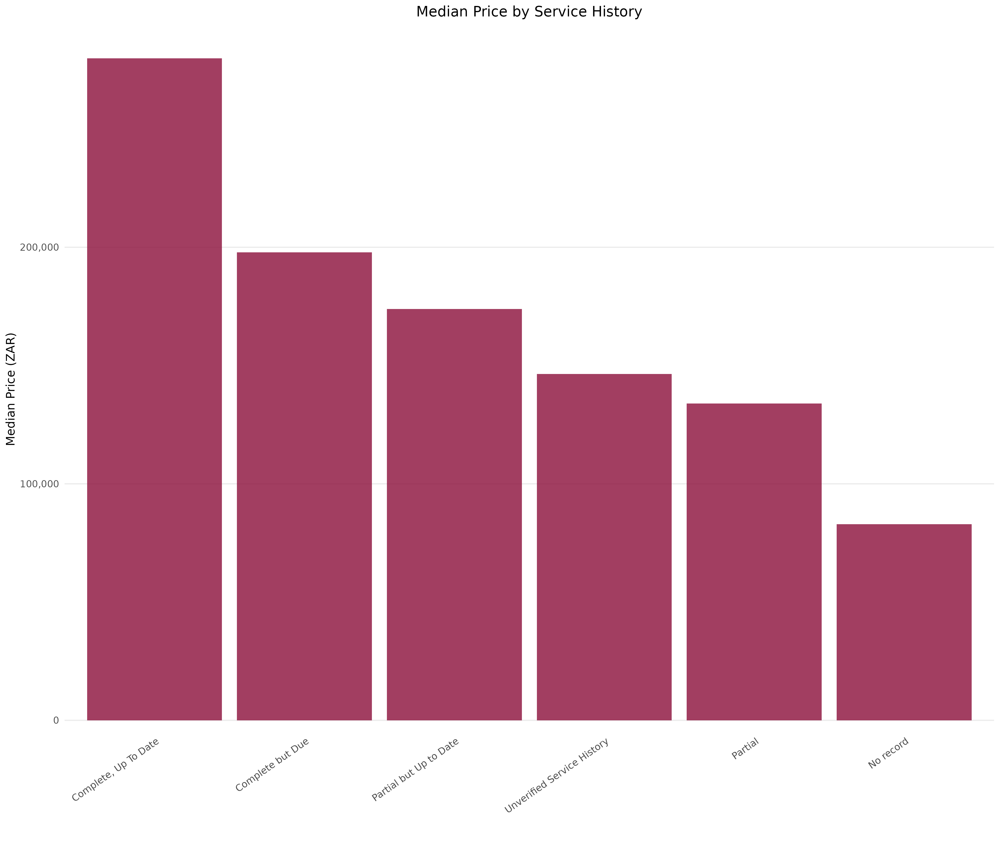

Price by Year
- Vehicle prices follow a predictable depreciation curve. A sharp decline in the first 10 years, then a flatting as cars age further. Once a car cross the decade mark, age becomes less of a differentiator -
at that point other features matter more (we'll be looking into this kind of variable importance in the coming section). This pattern demonstrates a typical car value lifecycle, where the biggest hit comes
early, and older vehicles settle into a stable, low-value band. The labels at the end of each bar represent the number of car listings captured in that year.
WeBuyCars Exploratory Data Analysis
This project presents a brief exploratory data analysis of 31,851 cars listed on WeBuyCars, scraped between 25 February and 23 April 2025. The analysis examines the market composition, geographical distribution of stock, as well as price and mileage patterns by make. Finally, it assesses the relationship between key features and price, ultimately making use of a random forest to identify key drivers of vehicle pricing across different price thresholds.
This brief EDA covers active listings that were present on the WeBuyCars website over
the 2 month scraping period. It provides a concise breakdown of the available data and highlights insights I was particularly interested in exploring.
View on GitHub
Market Breakdown
#change css for specific image (make smaller)

The top 10 brands account for 68% of all listings, showing that the used car market on WeBuyCars is concentrated around a handful of popular makes.
Where Buy Cars?
#change css for specific image (make smaller)

70% of WeBuyCars' scraped inventory is concentrated in Gauteng and the Western Cape with Gauteng making up nearly half of all listings. Gauteng's dominance isn't surprising given that the once-iconic
Coca-Cola Dome now, now the WeBuyCars Dome, houses more than 1,500 vehicles and
interestingly sells approximately 2,000 vehicles per month from the flagship. Notably, the scraped data showed no stock in the Northern Cape or Free State.
Price and Mileage Distributions
#change css for specific image (make smaller)

The negative relationship between price and mileage is clear. Most cars cluster between 100k-200k km and R100k-R250k, while vehicles beyond 300k km see prices bottom out - with only a few high-end models
resisting typical depreciation. For buyers, this middle band is the sweet spot, with lower prices and cars that haven't yet crossed into 'end-of-life' mileage.
Price and Mileage Distributions by Make
#change css for specific image (make smaller)

Mileage and price distributions are skewed rightward: most cars sit below 200k km and under R300k, but long tails emerge from high-mileage cars and premium models. Toyotas and Nissans
often appear at higiher mileage, indicating durability, while brands like BMW and Mercedes dominate the upper price ranges despite modest mileage. The ridgeplots underscore two parallel
markets, one driven by durability and the other by luxury.
Which Makes Have the Lowest Mileage
#change css for specific image (make smaller)

Mileage varies noticeably across makes. Popular brands like Toyota and Nissan show higher median mileage, reinforcing their reputation for durability and a long service life, while
luxry brands such as BMW and Mercedes demonstrate tighter mileage ranges, suggesting they're sold off earlier before the heavy wear and tear. This contrast reinforces the trends shown
by the ridgeplots, illustrating two distinct ownership patterns: durability foxued buyers who drive cars longer, and luxry owners who tend to trade out sooner, keeping average mileage
lower.
Depreciation & The Price Premium of Service History

Service History
- Median prices clearly differ depending on service history. Cars with a 'complete and up-to-date' record unsurprisingly fetch the highest prices, while thos 'complete but due' trade at slightly lower levels.
Vehicles with no service history record see a marked drop in median value, indicating how much trust and resale confidence hinges on documented maintenance. Even after excluding cars with missing fields, it's a
clear trend that service history is an important indicator of price.Median prices rise with documentation quality: “complete & up-to-date” commands the highest values, “complete but due” trades slightly lower, and “no record” sees a marked drop. (Empty service-history fields were excluded.)
Feature Importance
Interpretation of variable importance. NB on methodology and interpretation - use CODERA explanation for thresholds
#change css for specific image (make smaller)

Across price thresholds from R60k to R1m, year and gross vehicle mass consistently top the list. Mileage dominates below R250k, but plays a smaller role at the luxury end where model-specific
attributes and tank-size take over.